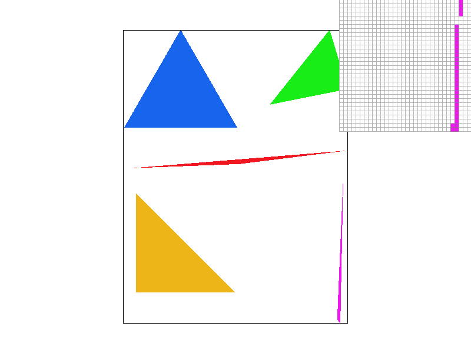
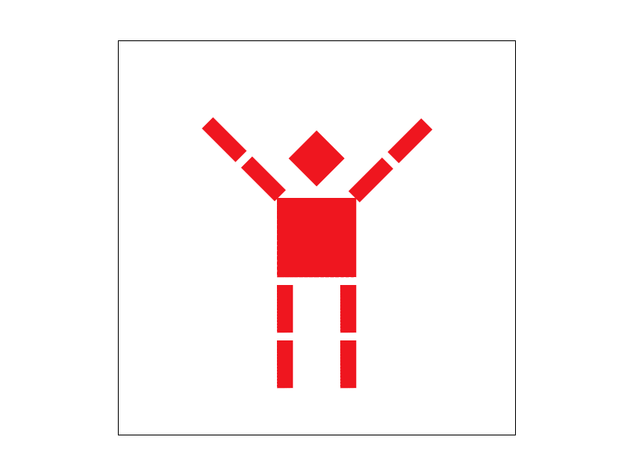
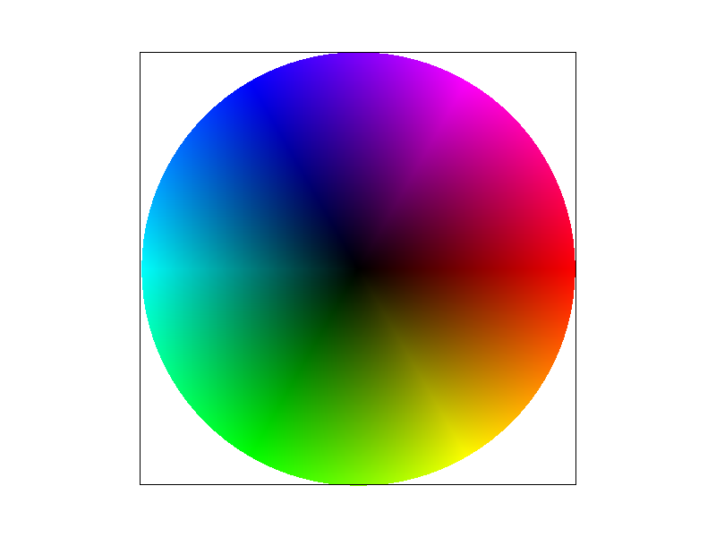

Leo Yuan & David Long
link: https://cal-cs184-student.github.io/hw-webpages-sp24-Kirtooo/
Throughout this homework, we were able to explore and implement sampling, supersampling, transform, barycentric coordinates, and texture mapping. By implement those various techniques, we were able to parctically see the effect of applying those on the image that rendered. I am really impressed by how useful barycentric coordinates are, as we used it to perfomred point-in-triangle test and also explored more of it in task4.
1. We first computed the boundary for the triangle by calculating the min and max value of X and Y for the three verices of the traingle. Then, we iterate through each points in the box, we define the pixel is inside the triangle if the center of the pixel is inside the triangle. For the point in triangle test, we compute the barycentric coordinate of the triangle to see if the point is inside. Lastly, we call fill in color for the point if it's inside the triangle.
2. Our algorithm is no worse than checking each sample within the bounding box because we checked each point in the bounding box of the triangle but not every sample in the frame.

1. Supersampling is useful because it allows us to approximate sampling of one pixel by sampling multiple points within the pixel and thus made the image qualitiy better.
We first resized the sample buffer to times it with the sample rate. In that case, we are able to perform point-in triangle test for every single points in the supersampling buffer.
As we need to fill the frame buffer, we performed downsampling in RasterizerImp::resolve_to_framebuffer().
Here, we iterates every points in sample buffer, sum the rgb value of points in every pixel in the frame, compute the average, and fill into the frame.
We tried to make the cubeman waving hands.
From my understanding, barycentric coordinates is that we can represent each points in a triangle by the relationship to the three vertices. As we can see from the picture above, all vertices of the triangle have different color, whereas points inside the triangle are a mix of those three colors. The closer the point is towerds a vertices, we can see that point has a more simalar color to that vertice. This is becasue we calculated the color of every points based on its barycentric coordinate.
